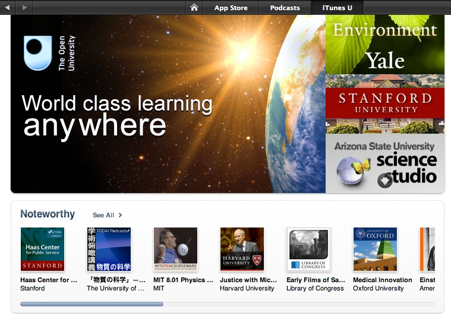

iTunes U is a completely free medium through the Apple iTunes application where colleges and universities can offer courses at no charge, to anyone who wants to take them.Currently, over 800 colleges and universities from across the globe provide content to iTunes U for post-secondary learning, and 15 states in the US offer iTunes U learning tools. There is also a new section of iTunes U that focuses on education, where state or county education departments provide content for both students and educators.
